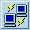
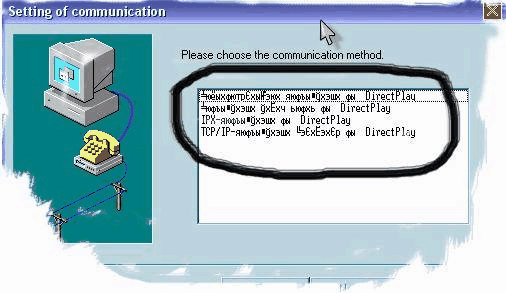
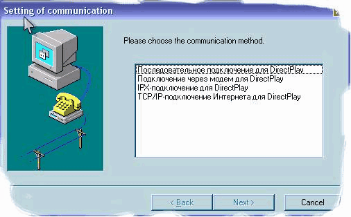
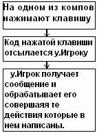

Изучаем DelphiX (Часть 6)
Изучаем DelphiX. Часть 6: Мультиплеер.
Автор: Влад Энгельгардт "SINGLE-хорошо, аMULTIPLAYER - лучше"
Здравствуйте дорогие мои читатели. Сегодня мы будем говорить о мультиплеере. Точнее об его создании в DelphiX. В DelphiX это реализуется с помощью компонента:

DXPlay. Многие, кто пытался что-то сделать на DXPlay, сталкивался с такой проблемой: что если вызывать диалог с DXPlay то получаем непонятный текст:
Устранить ее очень легко. Дело в том, что из-за "НЕРУССКОГО" происхождения программист Hiroyuki Hori в DXPlayFm.dfm в некоторых местах поставил шрифт: "Terminal", а нам нужен "MS Sans Serif". Поэтому то и всё так исковеркано. Я исправил эту проблему вот так:
И выкладываю исправленный мною модуль DXPlayFm.dfm, и более того, он русифицирован. Так что пользуйтесь на здоровье :) DXPlayFm.rar.
Сегодня мы напишем простенькую, мультиплеерную гаму. В этом я помогу вам.
В качестве шаблона я буду использовать part2.rar. Мы его модернизируем, и предадим ему мультиплеерность. Сразу говорю, что part2.rar состоял из 2 интерактивных объектов, соответственно и в наш мультиплеер можно играть только вдвоем.
Теперь я расскажу, как нужно модернизировать пример из второй части под шестой :).
На мой взгляд, эта часть является единственно растолковывающая создание мультиплеера под DelphiX. Сколько я прочитал статей по программированию мультиплеера на DelphiX, ничего путного не увидел. Здесь я использую простой алгоритм. Принцип его следующий: передаются не координаты объекта, а клавиши, которые были нажаты на удалённой машине.
Кидаем на форму компонент DXPlay и устанавливаем вот такие свойства:
MaxPlayers = 2,
GUID = {218A0D84-949C-42BC-A97B-40C3E3A642F1}.
GUID можно создать любой достаточно нажать на кнопку New.
Добавляем в uses модуль: DirectX.
После uses создаём список констант:
const DXACTION_MESSAGE = 1; // Это нажата клавиша действия DXKEY_LEFT = 1; // двигаемся влево DXKEY_RIGHT = 2; // двигаемся вправо DXKEY_SHOOT = 3; // Стреляем
Создаём новый тип для наших ACTION сообщений:
type
TDXActionMessage = record
dwType: DWORD;
ActionCode: Integer;
end;
Далее идут классы спрайтов:
Единственное, что поменялось это класс TBOSS, я его переименовал в TPLU.
Когда мы поменяли названия то и картинку нужно изменить на более подходящую.
Заходим в DXImageList и переименовываем спрайт Boss на Plu .
А вот картинка:
В Var перед implementation обозначаем два наших класса:
var Form1: TForm1; plu:Tplu; PlayerSprite:TPlayerSprite; implementation
Теперь подходим к процедуре TPlayerSprite.DoMove.
Она должна выглядеть вот так:
Procedure TPlayerSprite.DoMove(MoveCount: Integer);
var
Msg: ^TDXActionMessage; //Само сообщение
msgSize: Integer; //размер сообщения
begin
inherited DoMove(MoveCount);
if form1.DXPlay1.Players.Count =2 then // пока в игру не зайдёт второй игрок
// ни кто, не двинется
begin
if isLeft in Form1.DXInput1.States then
begin
x:=x-5;
msgSize := SizeOf( TDXActionMessage );
GetMem(Msg, MsgSize);
msg.dwType := DXACTION_MESSAGE; //тип сообщения
msg.ActionCode := DXKEY_LEFT; //действие
form1.DXPlay1.SendMessage(DPID_ALLPLAYERS,msg,msgsize); //отсылаем всем
end;
if isRight in Form1.DXInput1.States then
begin
X:=x+5;
msgSize := SizeOf( TDXActionMessage );
GetMem(Msg, MsgSize);
msg.dwType := DXACTION_MESSAGE;
msg.ActionCode := DXKEY_RIGHT;
form1.DXPlay1.SendMessage(DPID_ALLPLAYERS,msg,msgsize);
end;
if isup in Form1.DXInput1.States then
begin
if lngpolet-oldlngpolet>=900 then
begin
Inc(lngpolet);
with TPlayerFa.Create(Engine) do
begin
msgSize := SizeOf( TDXActionMessage );
GetMem(Msg, MsgSize);
msg.dwType := DXACTION_MESSAGE;
msg.ActionCode := DXKEY_SHOOT;
form1.DXPlay1.SendMessage(DPID_ALLPLAYERS,msg,msgsize);
PixelCheck := True;
Image := form1.dxImageList1.Items.Find('Pula');
X := Self.X+Self.Width -40;
Y := Self.Y+Self.Height -80 ;
Width := Image.Width;
Height := Image.Height;
stril:=-4;
end;
oldlngpolet := lngpolet;
end;
end;
if y >= form1.DXDraw1.SurfaceHeight-image.Height then
y := form1.DXDraw1.SurfaceHeight-image.Height;
if x >= form1.DXDraw1.SurfaceWidth -image.Width then
x := form1.DXDraw1.SurfaceWidth -image.Width;
if y <= 0 then
y := 1;
if x <= 0 then
x:=1;
lngpolet := lngpolet + MoveCount;
Collision;
end;
end;
Теперь, как вы понимаете, так как TBoss уже не существует, то и некоторые процедуры должны быть пусты:
Procedure TPLU.DoMove(MoveCount: Integer);
begin
inherited DoMove(MoveCount);
Collision;
end;
constructor TPLU.Create(AParent: TSprite);
begin
inherited Create(AParent);
end;
Далее очищаем событие для формы OnCreate и пишем в нём:
procedure TForm1.FormCreate(Sender: TObject);
begin
try
DXPlay1.Open;
Except
On E: Exception do
begin
Application.ShowMainForm := False;
Application.HandleException(E);
Application.Terminate;
end;
end;
With TBackgroundSprite.Create(DXSpriteEngine1.Engine) do
begin
SetMapSize(1,1);
Image := dxImageList1.Items.Find('bg');
Z:= -2;
Tile := True;
end;
end;
Далее кликаем по компоненту DXPlay создаём событие: OnMessage
И пишем следующее:
procedure TForm1.DXPlay1Message(Sender: TObject; From: TDXPlayPlayer;
Data: Pointer; DataSize: Integer);
begin
if TDXActionMessage( Data^ ).actioncode AND DXKEY_LEFT = DXKEY_LEFT then
plu.X:=plu.X -5; // получаем сообщение влево, двигаем удалённого
//playerа в лево
if TDXActionMessage( Data^ ).actioncode AND DXKEY_RIGHT = DXKEY_RIGHT then
plu.X:=plu.X +5; // получаем сообщение вправо, двигаем удалённого
//playerа в право
if TDXActionMessage( Data^ ).actioncode AND DXKEY_SHOOT = DXKEY_SHOOT then
begin // получаем сообщение - удалённый игрок выстрелил,
// создаём патрон на месте PLU
with TPlayerFa.Create(dxspriteengine1.Engine) do
begin
PixelCheck := True;
Image := form1.dxImageList1.Items.Find('Pula');
X := plu.X+plu.Width-70;
Y := plu.Y+plu.Height+10;
Width := Image.Width;
Height := Image.Height;
stril:=4;
Collision;
end;
end;
end;
Далее кликаем по DXDraw создаём событие Initialize и в нем пишем:
plu:= Tplu.Create(DXSpriteEngine1.Engine);
plu.PixelCheck := True;
plu.Image := form1.dxImageList1.Items.Find('plu');
plu.x:=350;
plu.y:=10;
plu.Width := plu.Image.Width;
plu.Height := plu.Image.Height;
PlayerSprite:= TPlayerSprite.Create(DXSpriteEngine1.Engine);
PlayerSprite.PixelCheck := True;
PlayerSprite.Image := form1.dxImageList1.Items.Find('Pla');
PlayerSprite.x:=350;
PlayerSprite.y:=500;
PlayerSprite.Width := PlayerSprite.Image.Width;
PlayerSprite.Height := PlayerSprite.Image.Height;
Вот, и всё запускаем, и радуемся.
А теперь я расскажу, как это всё работает.
Прежде чем начать писать мультиплеер, нужно осознавать, что тебе придётся думать за каждую из удалённых машин. Как она получит пакет, кому что нужно будет отправить и так далее. Так вот, в событии Message в DXPlay1 обрабатываются всё принятые сообщения, а отсылать их можно любым плеером из любого места в коде. Так вот когда один из игроков запускает игру, а другой присоединяется к нему, происходит такая картина:
В нашем примере все действия, которые происходят на другой машине, отражается на спрайте Plu.
Скачать всё, что мы творили можно вот здесь: part6.rar.
P.S Назвал я класс PLU потому что, так проще, расшифровывается как плеер удаленный.
P.S.S Я устал уже отвечать на такие письма типа: "У меня не распаковывается архив?" так вот, говорю, всё архивы запакованы WinRAR 3.0.